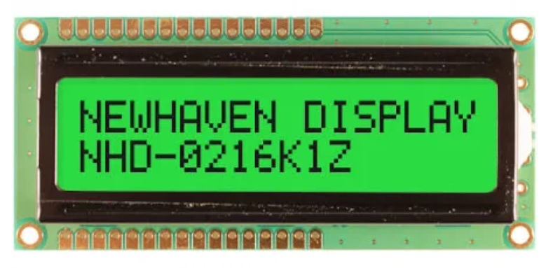

Display
Graphical Displays can be grouped into two distinct interface categories, parallel TFT displays and serial (SPI/I2C) displays. There are also non-graphical character displays.
The display drivers are meant to transfer the pixel data from memory to the actual display. The drawing tutorial shows how drawing is done, in memory.
Parallel TFT Displays
These displays connect to special dedicated pins on the processor. Internally, the display controller automatically transfers (refreshes) the display directly from memory without any processor interaction, using DMA. When the system needs to update the display, it simply writes to memory. Neither the operating system nor the application program are burdened with display processing. The down side to this is that the system needs to have enough RAM to handle the display. An 800x600 display with 16bpp needs 960,000 bytes!
Serial SPI/I2C Displays
The internal graphics services can be mapped to work with serial displays. This is done by having access directly to the graphics memory, which then can be transfered to the desired display.
As each display has its own pixel format and color depth, you also have access to the way pixels are written in the graphics memory.
This blog details how this can be accomplished.
Character Displays

These displays are capable of only showing characters. The most commonly use the HD44780 controller. They are available in different sizes but 2x16 character is most common. These displays only require GPIO pins and can be used with TinyCLR.
Low Level Display Access
TinyCLR also provides low level display access as part of the GHIElectronics.TinyCLR.Devices.Display library. These methods provide a simple way to write to a display without need for the System.Drawing library or an added font resource file.
The following example is written for the G120E Dev Board and will paint the screen as shown in the picture beneath the code. Note that low level display access requires that you to use the data format required by your display as configured. The G120E Dev Board used in this example expects each pixel to have 16 bits (two bytes per pixel) of color information in RGB565 format.
using GHIElectronics.TinyCLR.Devices.Display;
class Program {
private static void Main() {
var displayController = DisplayController.GetDefault();
// Enter the proper display configurations
displayController.SetConfiguration(new ParallelDisplayControllerSettings {
Width = 320,
Height = 240,
DataFormat = DisplayDataFormat.Rgb565,
HorizontalBackPorch = 29,
HorizontalFrontPorch = 51,
HorizontalSyncPolarity = false,
HorizontalSyncPulseWidth = 41,
DataEnableIsFixed = true,
DataEnablePolarity = true,
PixelClockRate = 15000000,
PixelPolarity = true,
VerticalBackPorch = 3,
VerticalFrontPorch = 16,
VerticalSyncPolarity = false,
VerticalSyncPulseWidth = 10
});
displayController.Enable();
byte[] myPic = new byte[320 * 240 * 2];
for (var i = 0; i < myPic.Length; i++) {
myPic[i] = (byte)(((i % 2) == 0) ? ((i / 2400) & 0b00000111) << 5 : i / 19200);
}
displayController.DrawString("\f");
displayController.DrawBuffer(0, 0, 320, 240, myPic, 0);
displayController.DrawString("GHI Electronics\n");
displayController.DrawString("Low Level Display Demo.");
for (var x = 20; x < 300; x++) {
displayController.DrawPixel(x, 50, 0xF800); //Color is 31,0,0 (RGB565).
displayController.DrawPixel(x, 51, 0xF800);
}
}
}
G120E Dev Board display after running the sample code: